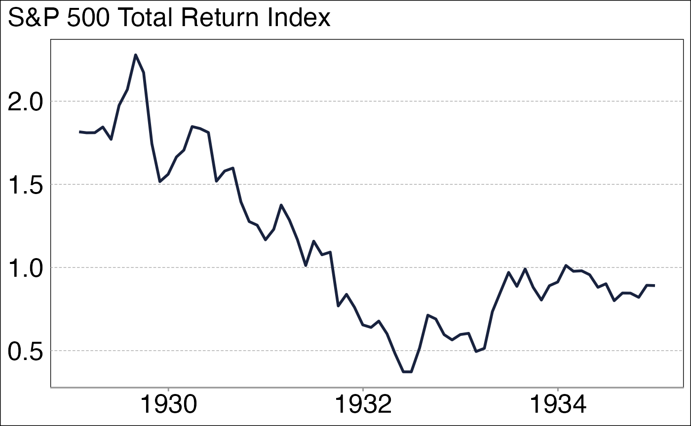

GFD
GFD.RmdGlobal Financial Data (GFD) Database and API
The Global Financial Data (GFD) database is a comprehensive repository of historical and modern financial and economic data. Its primary focus is on long-term historical data, often stretching back centuries, making it highly valuable for econometricians, financial analysts, and historians. The database includes data on: - Equities: Stock market indices, total returns, and sector data. - Fixed Income: Bond yields, government and corporate bond indices. - Commodities: Prices of precious metals, energy, and agricultural products. - Economic Indicators: GDP, inflation, employment, and trade balances. - Exchange Rates: Historical and current currency data. - Miscellaneous: Real estate, weather impacts on economics, and more.
One of its unique features is its long-run perspective, often providing data back to the 13th century for select series.
The GFD API enables automated access to its data, which is useful for integrating GFD data into models, research workflows, and dashboards.
To use the API, users need:
API Key: Provided by GFD upon subscription, used to authenticate requests.
Endpoint URLs: Specific URLs for querying datasets, retrieving metadata, or exporting data.
This package contains the gfd_data function, which is a
wrapper to access the API easily. You only need to set the
GFD_USER & GFD_PWD arguments in your environment. Use
usethis::edit_r_environ("user") to modify it globaly for
all your projects.
The function also uses RAM cache (memoise), thus you only need to fetch series once in a session. For the 2nd time, it will be loaded from memory
gfd_data("_SPXTRD", periodicity="Monthly") |>
filter(date > "1929-01-01", date < "1935-01-01") |>
ggplot(aes(date, close)) +
geom_line(linewidth = 1, color = mnb_colors(1)) +
theme_mnb_ts() +
labs(subtitle = "S&P 500 Total Return Index")